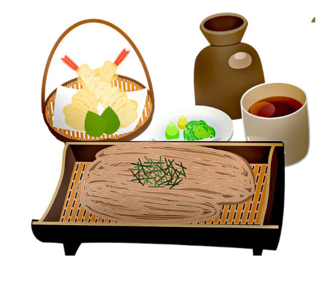

A Pantry
“Pantry” is an antique word with an eternal logic: Cooking is simpler and faster when you already have the ingredients. We’ve identified three levels of pantries among our readers — essential, expanded and expert — so whether you’re beginning to cook, stretching toward new flavors or an old hand with wide-ranging tastes, you’ll be prepared. Our definition of pantry encompasses refrigerator, freezer and cupboard, so you can make entire meals with “pantry” items. We know that no two people will agree on a list of staples — one cook’s go-to ingredient may be new ground for another — but this is the stuff we believe you should keep on hand. For the most part, they’re ingredients that last. When you run low on potatoes or lemons, don’t wait to restock. Instead, put them on the shopping list so they’re always at the ready.
| Oils and Vinegars | Cans and Jars | Spices and Dried herbs |
|---|---|---|
| Extra-virgin olive oil | Tuna in olive oil | Kosher salt |
| Neutral cooking oil | Tomato paste | Red-pepper flakes |
| Red wine vinegar | Diced tomatoes | Ground cayenne |
| White vinegar | Tomato sauce | Curry powder |
| Balsamic vinegar | Chicken stock | Bay leaves |
Source for this information: NY Times Cooking Newsletter |
||